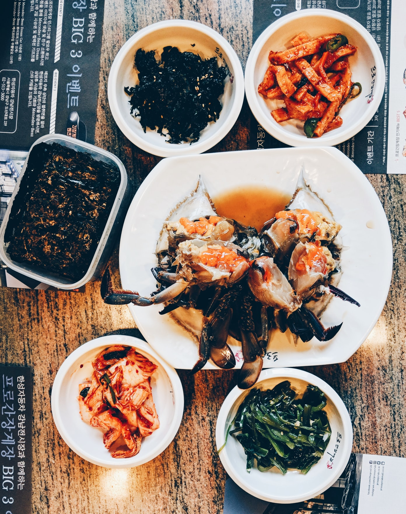
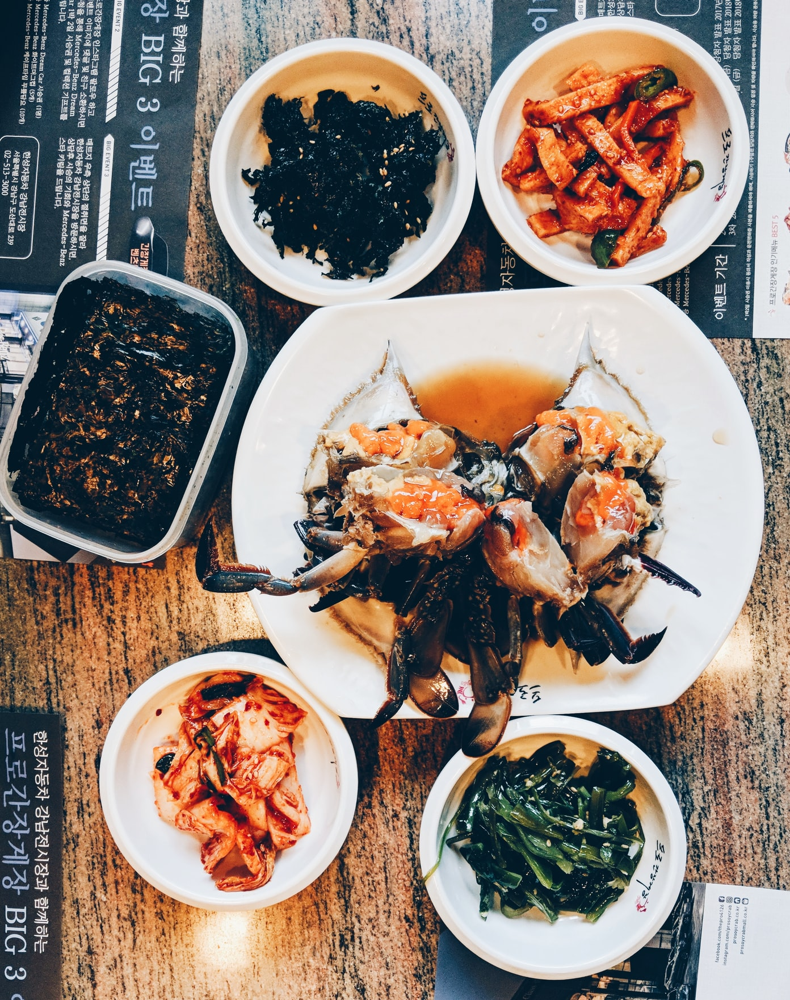

South Korea is an extraordinary country filled with beautiful beaches, thriving cities, ancient temples, remarkable natural scenery and most importantly, friendly people with ancient history.Seoul is an incredible city, brimming with mouth-watering food, exciting attractions and unforgettable shopping spots. The number of things to do, see and eat in Seoul are endless, and unique experiences await you on every corner. If you’re heading to Seoul for the first time, you are in for a one-of-a-kind adventure. Over the centuries, Koreans have created a fascinating and rich food culture made up of meat dishes, stews, soups, noodle dishes, seafood and many vegetable side dishes. Visit South Korea and you should spend an entire day roaming street markets sampling your way through this concert of flavors. Korea also has a lot of beautiful islands, the most popular and largest one being Jeju Island. Jeju Island is one of Korea’s most visited destinations thanks to its exceptional natural wonders and breathtaking beaches.
Turkey It’s a fascinating country with a rich history and culture.Crystal clear waters, tall mountains, the ruins of ancient empires, small idyllic villages, huge cosmopolitan cities—Turkey’s many facets are what make it so unique and why it has continued to attract visitors. Every region in Turkey has its own kitchen culture, including distinct ingredients and their resulting recipes. As such, Turkish cuisine is much more than tasty kebab and baklava, including fresh seafood and meze, a whole world of desserts, huge breakfast spreads,and much more.The hamam experience has become synonymous with Turkey and is a favorite among many visitors.Bodrum, Antalya, Izmir, and Fethiye have some of the most beautiful beaches in Turkey, with a spectrum that includes everything from secluded coves to exciting beach parties. With so much history to its name, Turkey also has a lot of fantastic museums that actively preserve findings from the many archaeological sites all around the country.
New Zealand is the most naturally beautiful and safest country in the world.New Zealand is famous for its beautiful scenery — from scenic surf beaches, attractive native forests and snow covered volcanoes in the North Island to the great Southern Alps, braided rivers and deep fjords in the South IslandSnow often arrives in the South Island between June and September, as well as in some of the North Island’s more mountainous areas, attracting skiers from far and wide. The spring and fall months herald milder weather and fewer visitors, but this is still a very pleasant time to visit. Temperatures normally sit in the fifties and sixties.With more than 14,000 kilometres of coastline, New Zealand is home to some amazing seafood. One of the most famous seafood spots is Kaikoura. In Maori, the word ‘Kai’ means food and ‘Koura’ means crayfish – so it’s not hard to guess what Kaikoura is famous for!Best enjoyed while sitting on a New Zealand beach on a balmy summer evening, fish and chips is a Kiwi favourite.